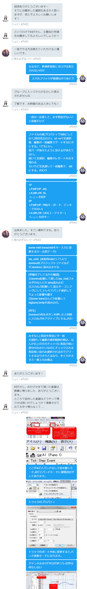

https://goo.gl/rmnoUX bome midi trans(midiをキー入力に変換するツール用データ) tas_midi (演奏用midiというよりdomino用プロジェクトファイルだが,dominoに読み込ませる スカルガのキーコンフィグ KST 1P LP,MP,HP: JKL LK,MK,HK: M,. ↑←↓→: ESDF 2P LP,MP,HP: 789 LK,MK,HK: UIO(ユーアイオー) ↑←↓→: 矢印キー 3月30日 [準備完了してるかの確認] ①domino起動して渡したtas_midiフォルダのなんとか.dms読み込む ②スカルガ起動して,指示キーコンフィグにして,トレモでバンド選択してちょっと距離を離す ③bome transなんとか起動してbigband.bmtpを読み込む｡ [再生] Dominoの再生ボタンを押したと同時にスカルガをアクティブにする｡おわり KST できたら教えて,できなかったら考える 3月30日 亡者のみずなし+7 すみません。一番上のurlが無効になってますね 亡者のみずなし+7 3月30日 KST はぁん 3月30日 KST https://drive.google.com/open?id=0B9-meNLaDCY-czZDS0RWZVpIQkk … 4月2日 KST アップロード先かえた,こんどこそ 4月2日 KST 4月2日 出来ました。 亡者のみずなし+7 ただ、2P側が吹かないのは楽譜によるものなんでしょうか。 亡者のみずなし+7 4月2日 bomeの2pにチェックをいれて、スカルガ2pのキーコンフィグしましたか？ KST もしそうならこっちのミスだと思うので確認してみます 4月2日 KST ちなみにどの曲ですか 4月2日 チェックはいっててキーコンフィグも出来てました。トランペットは吹かないんですが屈伸しまくったり技振ったりしますね。 亡者のみずなし+7 殆どの曲です 亡者のみずなし+7 4月2日 KST 21時までコンビニバイトで動けないので、それ以降にまた 4月2日 亡者のみずなし+7 わかりました。 亡者のみずなし+7 4月2日 KST オーエンのデータがシンプルなので,それで説明します｡ 4月2日 オーエンでB1,およびB2のスピーカーが押し込まれているか確認してください KST デフォルトではなっています 4月2日 KST 4月2日 そして2Pが屈伸したりはするが,曲を吹かないのは,トランペットを構えるMPのキーコンフィグを間違えてるからだと思ってるんですがどうでしょう MPは8キーです またねんのためいいますがテンキーではなくキーボード側のキーです KST 思うにテンキー側の数字を指定していませんか? 4月2日 テンキーにしてました。失礼しました。 亡者のみずなし+7 2P側も服用になりました、 亡者のみずなし+7 4月2日 KST こっちもテンキーの存在忘れてました｡テンキーの無いキーボードを使っているので 4月2日 KST とりあえず動いてよかった 4月2日 亡者のみずなし+7 ありがとうございます。 亡者のみずなし+7 4月2日 演奏データの作り方だけど二種類方法があって, 1から作る方法と KST 落ちてるやつを修正していく方法がある｡ 4月2日 後者は｢好きな曲名 midi｣で検索かけて探して修正といったかんじ KST midiが何かはご存知? 4月2日 KST midiは･･まぁ汎用演奏データのこと｡ドレミやどの楽器使ってどのくらいの強さで吹くといったデータが入ってる｡ 4月2日 亡者のみずなし+7 説明しろって言われると難しいですが曖昧ながら知ってはいます 亡者のみずなし+7 4月2日 ならいいかな｡ KST dominoの使い方は知ってる? 4月2日 亡者のみずなし+7 知らないです 亡者のみずなし+7 4月2日 ファイル>新規作成をクリックして 図のようにしてみる｡左のピアノにかかれてるC4の部分が基準 KST 再生をおすと,ピアノの音がなる｡ファ#ー ドレミファミレドーと 4月2日 KST ここがAになってる時は,普通に音がなるモードにしてある 4月2日 KST 編集時はAにしておくとスカルガ起動してなくてもきけるって寸法 4月2日 亡者のみずなし+7 はい 亡者のみずなし+7 4月2日 AからBにかえると,バンド演奏モードになるようにしてある｡ トラック→トラックのプロパティで,ポートとチャンネルが切り替えられる｡ トラック: 楽団でいう楽器パートのこと｡ KST ポートをAにしているときは,普通におとがなり,ポートをBにするとバンドモードになる｡(Bome'sなんとか起動してるとき) 4月2日 亡者のみずなし+7 はい 亡者のみずなし+7 4月2日 チャンネルは1が1P,2が2Pになるようにしてある んーこんな説明で大丈夫かな この青いバーだけど,消したいときはダブルクリックすれば消せる感じ KST 最初にファ#をならしてるのは,ファ#がトランペットを構える音色だから 4月2日 KST 基本操作は伝えてみたので,ためしにチューリップの花とかメリーさんのひつじとかに挑戦してみては? 4月2日 亡者のみずなし+7 簡単なものに挑戦してみます。 亡者のみずなし+7 4月2日 鉛筆モードのときに,右ダブルクリックすると範囲選択モード もいちどで鉛筆にもどる｡範囲選択モードの使いかは･･･触ってたら多分わかると思う KST ところでWSMさんも興味あると思ってグループにいれてたんだけど,いらなかったら外すけどどう? 4月2日 亡者のみずなし+7 操作方法はやりながら慣れていきます。 亡者のみずなし+7 4月2日 亡者のみずなし+7 出来ました、ありがとうございます。 亡者のみずなし+7 4月2日 KST 私がやってる動画化手順はこんなかんじ｡ 4月2日 KST http://skullgirls-wiki.com/d/%c6%b0%b2%e8%ba%ee%a4%ea%ca%fd … 4月2日 亡者のみずなし+7 動画編集に関してはちょくちょく上げてるので大丈夫です。細かいとこまでありがとうございます。 亡者のみずなし+7 4月2日 https://youtu.be/tPZO4UQ7NkA KST 私の作業の様子 4月2日 じょにさんを追加しました 亡者のみずなし+7 休符はどうやっていれればいいですか 亡者のみずなし+7 4月3日 KST lk,mk,hk同時押しが無音コマンドです。従ってソとラの同時押しで無音コマンドになります 4月4日 KST ビッグバンドの休日やスーパーマリオワールドtasなどで細かくおとをくぎっているパートをみるとわかるきもしれません。動画でも 4月4日 亡者のみずなし+7 ありがとうございます。動画等参考にしてみます。 亡者のみずなし+7 4月4日 KST 実際のデータも渡してあるのでそれを見てもいいですね。そのパートを鳴らしたければスピーカアイコン押で 4月4日 KST 拾ってきたmidiで、いちいち青バーの小さな隙間を開けるのが面倒な場合一括でやる方法があります。必要なら言ってください 4月4日 KST 音域はc3から上へ3オクターブでそれ以外はなりません。 4月4日 じょに 招待ありがとうございますー すでにお聞きした質問もあるかと思いますが、何とぞよろしくお願いします！ じょに 4月4日 じょに というわけでKSTさん、③意向の手順をお聞きしてもよろしいでしょうか？ じょに 4月4日 亡者のみずなし+7 一括でやる方法教えていただけると嬉しいです。 亡者のみずなし+7 4月4日 なるほど、新規参加者にはログは表示されないのか KST スマホフリックが面倒なのであとで 4月4日 グループに入ってからのものしか表示されませんね じょに 了解です、お時間のあるときにでも！ じょに 4月4日 KST 一括は一応書くと、まず和音がないこと前提だけど 4月4日 KST ファイルの曲プロパティで480にしておく(項目名忘れた)、crl +aで全選択後、編集の一括編集でゲートを10とかにする。1でもいい。 青バーが消えたように見えるが消えてない。 続いて全選択、編集のレガートをおす 現れる もいちど全洗濯して一括編集で、-60にする。おわり 4月4日 KST 480と60は私がさんざん悩んだ末見つけた値。これより小さいとボタンを離したということにならない 4月4日 最後に最終音だけやたら短くなってるのでそこだけ修正する KST なれれば30秒 4月4日 ジョニ https://drive.google.com/open?id=0B9-meNLaDCY-czZDS0RWZVpIQkk … KST 1P LP,MP,HP: JKL LK,MK,HK: M,. ↑←↓→: ESDF 2P LP,MP,HP: 789(キーボード、テンキーではない) LK,MK,HK: UIO(ユーアイオー) ↑←↓→: 矢印キー 4月4日 亡者のみずなし+7 出来ました。すごい便利ですね。ありがとうございます。 亡者のみずなし+7 4月4日 bome midi trans(midiをキー入力に変換するツール用データ) tas_midi (演奏用midiというよりdomino用プロジェクトファイルだが,dominoに読み込ませる KST [準備完了してるかの確認] ①domino起動して渡したtas_midiフォルダのなんとか.dms読み込む ②スカルガ起動して,指示キーコンフィグにして,トレモでバンド選択してちょっと距離を離す ③bome transなんとか起動してbigband.bmtpを読み込む｡ [再生] Dominoの再生ボタンを押したと同時にスカルガをアクティブにする｡おわり 4月4日 KST みずなし) 和音を単音に半一括 全選択して編集の選択範囲の絞込、なんか右上の方のチェックに和音の低い部分のみみたいなのにチェック入れる 和音低い音のみ選択されるのでデリートするなりきりとるなり、をくりかえすと一番上のみ残る 4月4日 じょに ありがとうございます！ じょに 4月4日 じょに KSTさん、おかげさまで頂いた楽譜は無事に鳴りました、ありがとうございます。 ところで自作した楽譜はどうやって鳴らせば良いのでしょうか？演奏させてみても中々鳴らなくて… じょに 4月5日 ここがAだとバンドなしで音を聴くモード｡Bだとバンドモードに環境設定がしてあります｡ トラックのプロパティ トラックのポートをBに変更すると,バンド演奏モードになります｡ チャンネルは1が1P,2が2P.ソレ以外は何もしない KST また青バーは少し隙間をあけないと,ちゃんと演奏してくれません｡ 4月5日 なぜなら,ボタンを二回おすということは,その間にボタンを｢離す｣動作が必要だからです また使える音域は左のピアノに記載されているC3から上へ3オクターブです｡ C6より上は鳴りません｡ そのためmidiを拾ってきて再生させたければ4つの修正が入ります｡ ①音域調節 ②和音を別トラックにわけて単音化させる ③青バー同士に少し隙間をあける｡ KST ④休符が長すぎる場合はトランペットをおっことすので無音コマンドを挟む 4月5日 ドミノの便利なショートカットを伝えると｡右のダブルクリックで鉛筆と範囲選択モードを切り替えられます｡鉛筆モードダブルクリックで青バー削除｡範囲選択モードでダブルクリックで貼り付けです｡ こんな回答でいい? KST そうそう,最初にファ#がいります｡ファ#は楽器を構えるコマンドです｡ 4月5日 なるほど、恐らく上手く鳴らなかったのは青バーの感覚が狭かったからですかね じょに よく分かりました！お忙しいところありがとうございます！！ じょに 4月5日 青バーの隙間を一括で修正する方法は KST ファイルの曲プロパティで480にしておく(項目名忘れた)、crl +aで全選択後、編集の一括編集でゲートを10とかにする。1でもいい。 青バーが消えたように見えるが消えてない。 続いて全選択、編集のレガートをおす 現れる もいちど全洗濯して一括編集で、-60にする。おわり このメッセージを報告する このメッセージを削除 4月5日 KST うまくいくといいですね｡ 4月5日 じょに ありがとうございます！やってみます！ じょに 4月5日